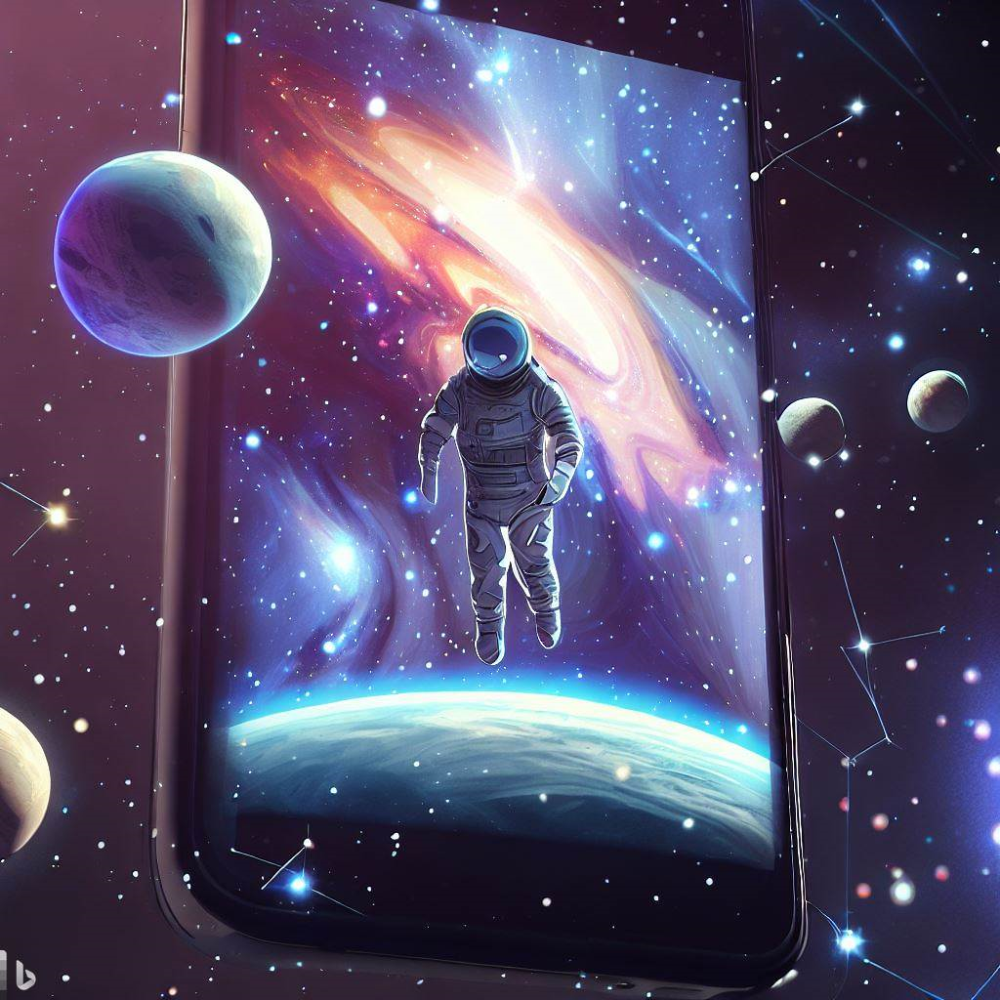
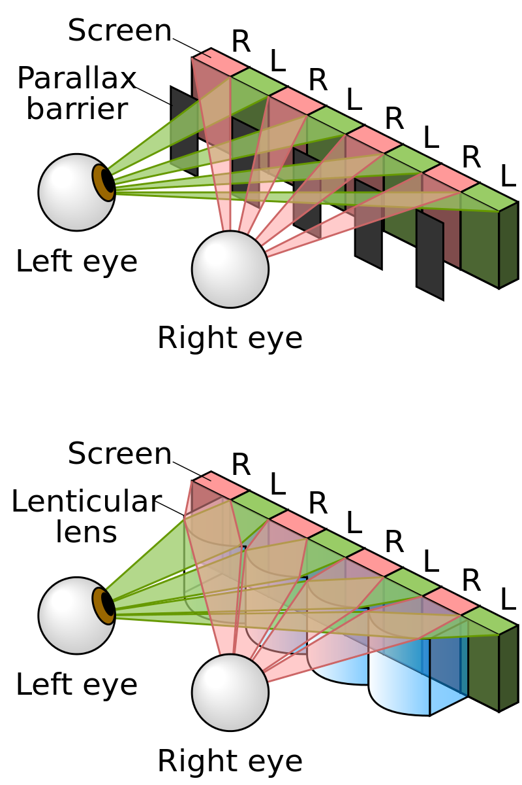
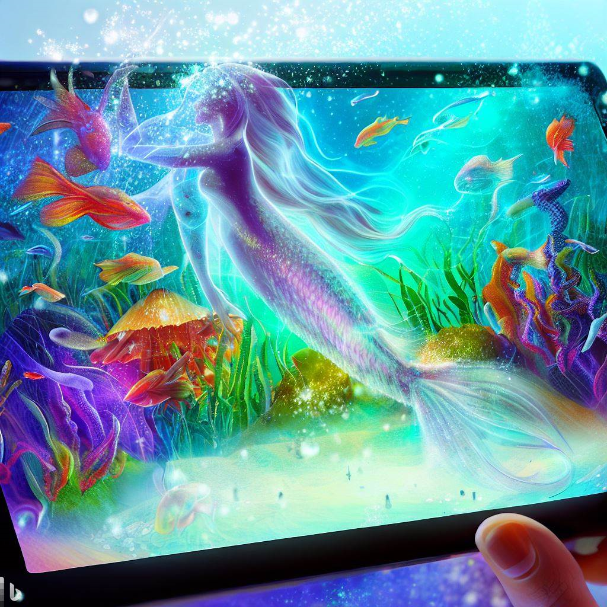
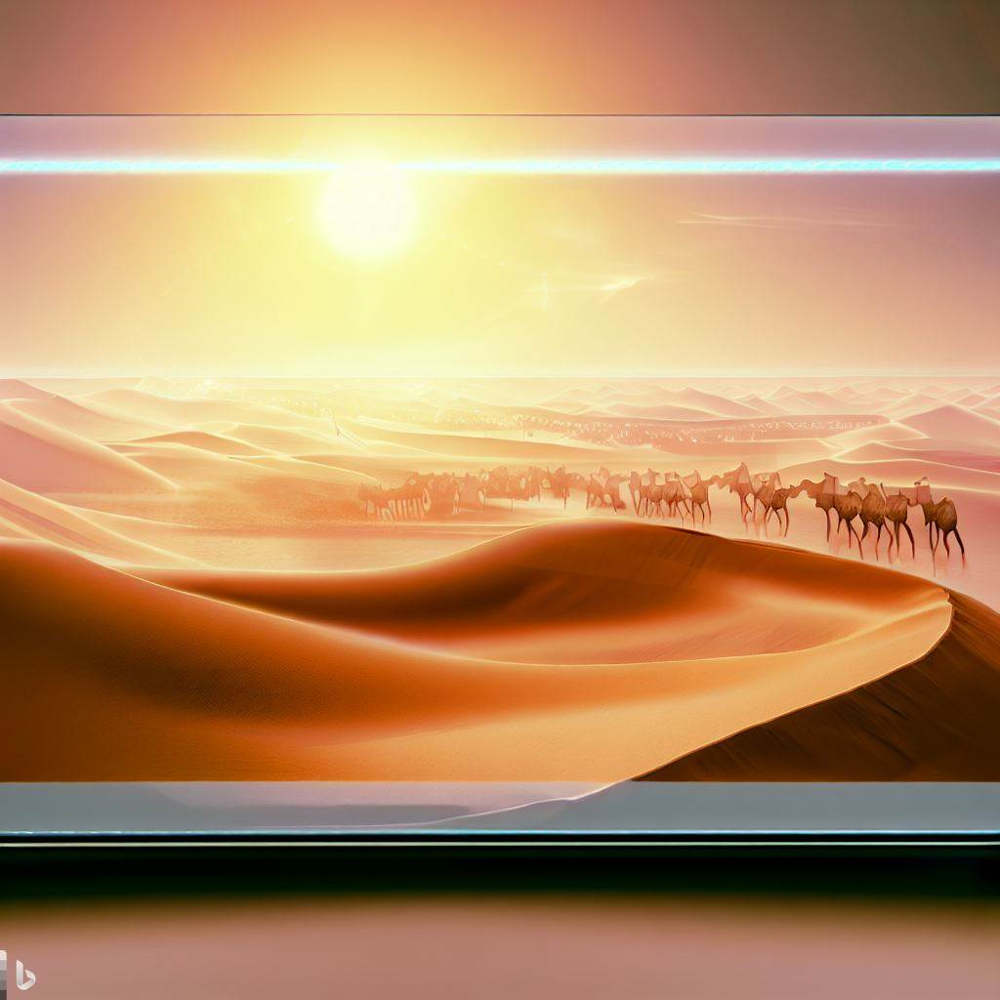

Autostereoscopy: The Future of 3D Display Technology
With the advent of advanced technology, 3D display technology has taken the entertainment industry by storm. One of the most significant advancements in 3D display technology is autostereoscopy. In this article, we will explore what autostereoscopy is, how it works, its applications, and its impact on the future of 3D display technology.
What is Autostereoscopy?
Autostereoscopy is a type of 3D display technology that allows users to view 3D images without the need for special glasses. Unlike traditional 3D displays that require users to wear glasses with polarized or colored lenses, autostereoscopic displays use various methods to project separate images to each eye, resulting in a 3D image that can be viewed without glasses.
How Does Autostereoscopy Work?
Autostereoscopic displays use different technologies to achieve the 3D effect. Some displays use lenticular lenses, which are thin, parallel, and elongated lenses that allow light to pass through them at different angles. These lenses project different images to each eye, resulting in a 3D image. These lenses can be found in products such as 3D posters and postcards, as well as some older 3D TVs. The lenses are placed on top of the display, and each lens projects a slightly different image to each eye, allowing for a stereoscopic effect without the need for glasses. However, one of the limitations of lenticular lenses is that they require the viewer to be positioned in a very specific spot in order to see the 3D effect, making it less practical for larger displays. Additionally, lenticular lenses can suffer from image quality degradation if viewed from off-center angles, and the lenses themselves can be quite expensive to produce.
{kind=link}
“Parallax barrier vs. lenticular screen” by Cmg Lee. Licensed under CC BY-SA 3.0 via Commons.
Integral imaging is another type of autostereoscopic technology that utilizes an array of micro-lenses to capture multiple views of an object or scene. These views are then reconstructed and displayed using a special screen that can direct the light to the viewer's eyes, creating the illusion of depth and 3D. Integral imaging has the advantage of providing high-quality and full-parallax 3D images, meaning that the 3D effect is consistent regardless of the viewer's position or angle of view. However, integral imaging also has some limitations, such as its high computational and processing requirements, which can make it challenging to implement in real-time applications such as video games or virtual reality.
Another method used in autostereoscopic displays is parallax barrier technology. This technology uses a series of vertical slits that alternate between left and right images. Each slit allows the light to pass through to the corresponding eye, creating a 3D effect. A parallax barrier is a device that is placed in front of the screen and consists of a series of alternating opaque and transparent strips. These strips direct the left and right eye views to the correct eye, creating the stereoscopic effect. The parallax barrier technology has advanced significantly in recent years, allowing for improved resolution and viewing angles, as well as the ability to adjust the barrier based on the viewer's position. Despite these improvements, parallax barriers still have some limitations, such as decreased brightness and the potential for visual artifacts. However, with continued research and development, these limitations are likely to be addressed, further improving the overall viewing experience for autostereoscopic displays.
Types of Autostereoscopy displays
Autostereoscopic displays are becoming increasingly popular for displaying 3D content without the need for cumbersome glasses. There are three main types of autostereoscopic displays: two-view displays, head-tracked displays, and multiview displays.
Two-view displays have been around for over a century and typically use either parallax barrier or lenticular sheet technology. These displays split the horizontal resolution of the underlying display device into two sets, with one set of columns representing each of the viewer's eyes. The viewer must be in the correct position to perceive a stereoscopic image, and there is a 50% chance of seeing an incorrect, pseudoscopic image.
Head-tracked displays use sensors to track the viewer's head position and adjust the displayed images accordingly, preventing pseudoscopic viewing. However, head-tracking systems can be limited by the tracking technology's lag and the need for the viewer to remain still. Some head-tracked displays use mechanical movement to physically move the viewing zones, which must be both rapid and robust.
Multiview displays offer the advantage of accommodating multiple viewers, each seeing 3D from their own point of view without the need for head-tracking. The difficulty in building a display with many views and the need to generate all the views simultaneously are the main challenges for multiview displays. Overall, autostereoscopic displays offer a promising alternative to traditional 3D displays, and advancements in technology continue to improve their performance and usability.
Applications of Autostereoscopy
Autostereoscopy has various applications in different fields, including entertainment, education, and healthcare. In the entertainment industry, autostereoscopy has been used to create 3D movies, video games, and virtual reality experiences. Autostereoscopic displays are also used in the medical field to view 3D images of organs, bones, and other body parts during surgical procedures.
In the education sector, autostereoscopic displays have been used to create interactive 3D learning environments. Autostereoscopy technology has been utilized in digital signage, enabling businesses to showcase their products and services in 3D, creating a more immersive and engaging experience for customers.
Advantages of Autostereoscopy
The main advantage of autostereoscopy is that it eliminates the need for 3D glasses. Glasses-free 3D displays offer a more convenient and comfortable experience for users, as they do not have to worry about losing or damaging their glasses. Autostereoscopic displays also offer wider viewing angles, allowing multiple people to view the 3D image from different positions.
Future of Autostereoscopy
The future of autostereoscopy looks promising. With advancements in technology, the quality of autostereoscopic displays has improved significantly, offering higher resolutions and brighter images. Researchers are also exploring ways to reduce the eye strain caused by autostereoscopic displays, making them more comfortable for long-term use.
In conclusion, autostereoscopy is a revolutionary 3D display technology that eliminates the need for 3D glasses, providing a more convenient and immersive experience for users. The technology has various applications in different fields, including entertainment, education, and healthcare. With the continuous advancements in technology, autostereoscopy is set to become the future of 3D display technology.
This text was written with help of ChatGPT and the figures were generated using Bing.
If you're interested in learning more about this research, feel free to reach out!
Rik Spieringhs